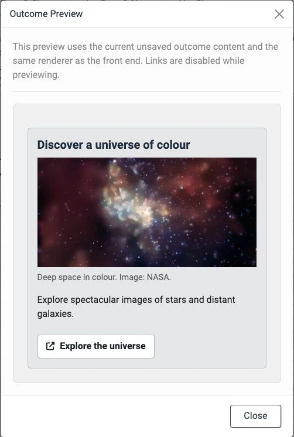

Article 9 · Existing article · /joomla-extensions/decision-tree-pro
Copy preview only. Live Joomla styling and working components are checked during staging.
Decision Tree Pro
Build richer guided journeys for your Joomla website.
Create multiple decision trees for service guidance, product recommendations, support and step-by-step information flows. Give each outcome useful content and a clear next action.
New in Pro 1.4.0
Use the visual canvas included in Free 1.4.0, with additional tools for building and checking rich outcomes.
- Image blocks: choose images from Joomla’s Media Manager, add alternative text and a caption, and select a display size.
- Preview from here: test the current unsaved journey beginning at any question.
- Preview outcome: view an individual outcome directly from its canvas card.
- Canvas editing: work with rich content blocks inside the outcome editor, with content retained when switching views, duplicating questions and saving.
- Interface refinements: clearer hover and focus feedback, including previews and the analytics settings button.

What Pro adds
- Unlimited trees: create separate journeys for different services, products or sections of your site.
- Whole-tree duplication: use an existing workflow as the starting point for another.
- Rich outcomes: combine headings, text, lists, images and call-to-action buttons.
- Focused previews: check a branch or outcome without starting every preview at the first question.
- Anonymous analytics: review starts, completions, outcomes, answer choices and drop-offs when collection is enabled.

Understand how your trees are used
Analytics were introduced in Pro 1.3.0 and remain available in 1.4.0. Filter reports by tree, dates and saved revision; export CSV data and choose a retention period.
Collection is off by default. When enabled, Decision Tree Pro stores anonymous interaction data in your own Joomla database. It does not set analytics cookies or store names, email addresses, IP addresses, user-agent strings, full page URLs or referrers, and it does not send analytics data to Grant Hood or another third party.
Installing and updating Pro
Pro is an add-on: install or update Decision Tree Free to 1.4.0 or later first, then install Decision Tree Pro 1.4.0. Keep both packages installed. Download Decision Tree Free if you need the base package.
For Joomla 5 and Joomla 6. Use a PHP version supported by your installed Joomla version; the extension’s own minimum is PHP 8.1.
Install pkg_decisiontreepro-1.4.0.zip through System → Install → Extensions. For future updates, enter the Download Key from your purchase email under System → Update → Update Sites → Decision Tree Pro Update Server.
Read the complete Pro guide for installation, images, previews and analytics.
Previous version highlights
Version 1.3.0 and earlier
1.3.0 — anonymous analytics
Introduced anonymous first-party analytics, including completion and outcome reports, drop-offs, answer paths, CSV exports, retention and deletion controls. It also included the shared Free 1.3.0 editing and preview improvements.
Version 1.2.4 — clearer updates and prerequisites
Aligned Pro with Decision Tree Free 1.2.4, added clearer guidance when the Free package needed updating first, and prepared protected delivery through Joomla's extension updater.
Version 1.2.3 — Pro stability improvements
Stabilised the rich outcome editor and frontend renderer, strengthened the separation between the Free foundation and Pro add-on, and expanded automated integration testing.
Version 1.2.2 — refined rich outcomes
Refined the structured outcome editor and frontend presentation for headings, formatted text, lists and call-to-action buttons.